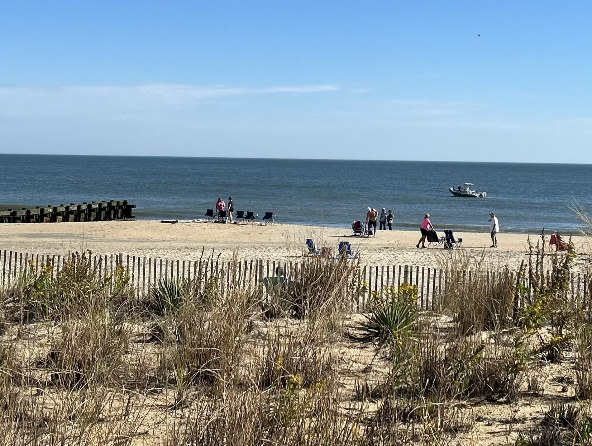

Gordons Pond's main boardwalk trail does exactly what it's built to do — it gets a steady stream of walkers from the parking lot straight out to the beach, flat and easy, done in about twenty-five minutes round trip. Most visitors do exactly that and call it a day.
But where the boardwalk crosses back inland, a narrower dirt path splits off through the maritime forest instead of returning to the lot directly. It's marked, technically, with small blazes easy to miss if you're not looking down — which is probably why so few people take it.
The path winds through loblolly pine and holly thickets, opens briefly onto marsh views facing the bay, and stays noticeably cooler than the open dune trail in July. It adds maybe forty minutes to the walk, and for most of it, the loudest sound is wind moving through pine needles instead of the ocean.
It loops back to the main lot eventually, no navigation required, no risk of getting lost. But for a park that gets genuinely crowded on summer weekends, it's the closest thing to solitude Cape Henlopen offers — and it's sitting in plain sight the whole time, mostly unbothered.
Want the full walking guide?
Parking, distance, timing and what to bring for both the short boardwalk version and the full quiet-trail loop: Gordon's Pond to the Water — the complete guide →